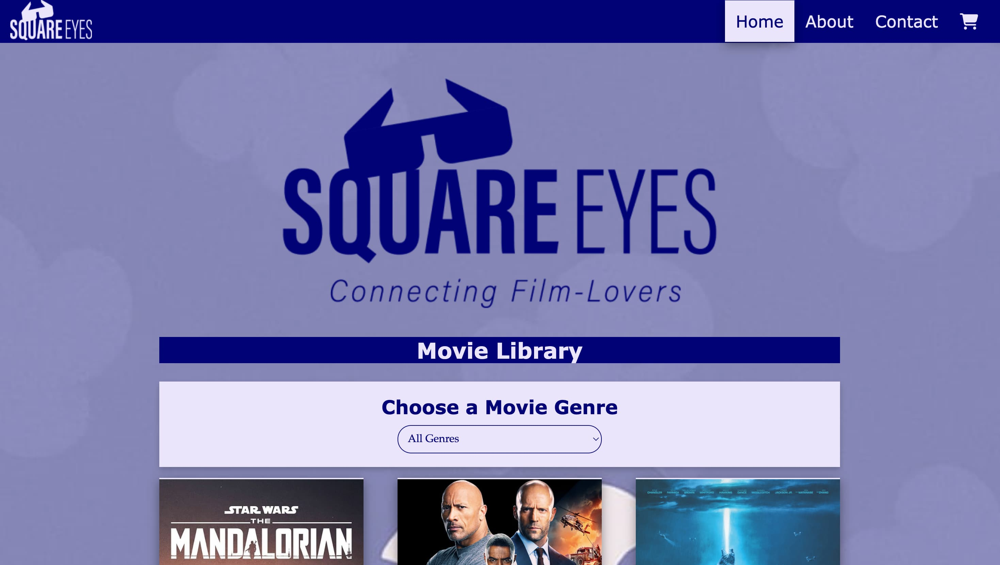

Square Eyes
An interactive movie store. First design and HTML project, made interactive using JavaScript and the Noroff Square Eyes API.
GitHub Repository Live SiteAn interactive movie store. First design and HTML project, made interactive using JavaScript and the Noroff Square Eyes API.
GitHub Repository Live SiteA responsive website for a fictional science museum. Designed with Figma, built with HTML and CSS.
GitHub Repository Live Site
A skitouring blog platform. Design with Fimga. Included features like register, login, logout, post creation and edit.
GitHub Repository Live SiteFrontend development student focusing on building clean, responsive, and accessible web experiences. I enjoy transforming design concepts into functional interfaces using HTML, CSS, and JavaScript. My approach emphasizes simplicity, usability, and purposeful design.
For questions about my portfolio or frontend development work, feel free to send me an EMAIL.